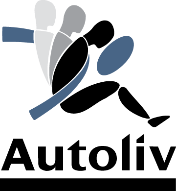

About the DIV project
Every year, vulnerable road users (VRU: cyclists and pedestrians) account for about 28% of all road fatalities in Europe. Because of their intrinsic vulnerability, cyclists and pedestrians are especially at risk of severe injuries and death in conflicts with motorized vehicles Interaction between VRU and motorized vehicles is particularly critical in crossing scenarios (Dozza and Werneke 2014) where the trajectory of a motorist and a VRU intersect, as well as in longitudinal scenarios when a motorist may overtake a slower VRU (DaCoTa-Project 2011). Both these scenarios are envisioned in the future development of test scenarios for Euro NCAP.
Safe interaction between VRU and motorists depend on the interplay between VRU and motorist behavior and can be assessed in terms of comfort boundaries (Lubbe and Rosen 2014). Comfort boundaries may be described with regard to (relative) kinematics that are normally experienced by a motorist or a VRU (Bärgman 2015). The definition of comfort boundaries is important because, whenever motorists deviate from their comfort boundaries a warning or autonomous intervention may be legitimate. In addition, comfort boundaries need to be respected for automated driving to succeed, especially when automated and non-automated vehicles coexist.
Comfort boundaries are subjective (i.e. they change within a specific range across different persons) depending on driving style, culture, age etc… Comfort boundaries can be quantitatively assessed in field tests using instrumented vehicles/bicycles as well as in driving simulators (Lubbe and Davidsson 2015).
This project investigates comfort boundaries between motorists and VRU to develop a driver model for crossing and longitudinal scenarios. Interaction between motorists and cyclists is the focus of the project and will result in models to be verified using (naturalistic) field data. Interaction between motorists and pedestrians are also investigated in this project. Models will be implemented in Matlab to enable counterfactual simulations (Bärgman et al. Submitted) in the verification phase and in future projects.
Partners
